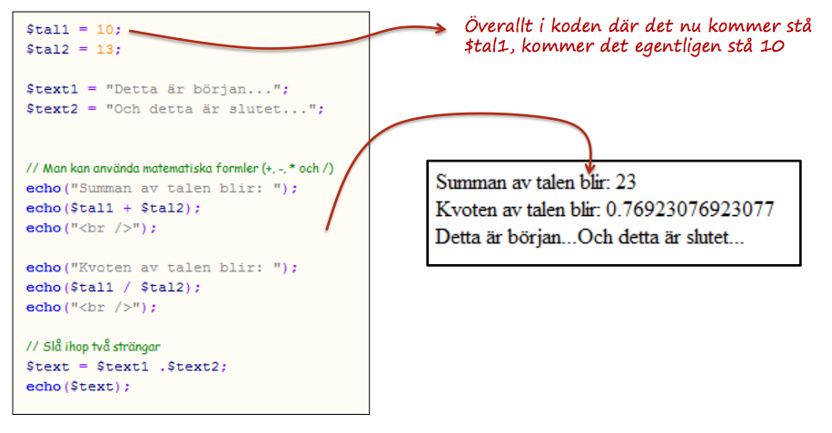
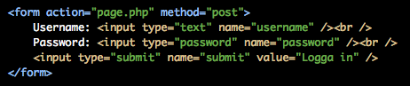

Web Management, 1IK424
Linnéuniversitetet, VT2013
PHP
Repetition
PHP är ett serverscriptspråk

Vad du ska kunna efter denna förläsning
- Använda variabler i PHP
- Skriva ett formulär i HTML samt ta emot det användaren skriver i ditt PHP-skript
- Programmera med selektionssatser i PHP
- Använda for-loopar i PHP

Rasmus Lerdorf i 1994-95
En samling script som t.ex. visade antal besökare på en webbsida (PHP Tools)
Gratis att använda, stort community, mycket information att hitta
Idagsläget version 5.5
"244 million websites" enligt
http://news.netcraft.com/archives/2013/01/31/php-just-grows-grows.html
Vad är en variabel?
- En variabel ses som en namngiven behållare för ett sparat värde
- Variablerna ges unika namn så att man kan referera till dem senare i sin kod
- Ett variabelnamn är "casesensitive" d.v.s. message != Message
// Variabel i javascript
var age = 10;
// Variabel i PHP
$age = 10;
$age = $age + 10;
echo($age); // Vad kommer skrivas ut?
Vad kommer skrivas ut?
// Variabel i PHP
$tal_x = 10;
$tal_y = $tal_x;
$tal_z = 100;
$resultat = ($tal_x * $tal_y) - $tal_z;
// echo skriver ut värdet i $resultat
echo($resultat);
// $resultat = (10*10) - 100;
// $resultat = 0;
Olika typer av variabler
En variabel kan vara av olika datatyper
vilket innebär att man behandla dem på olika sätt.
- integer - heltal (1, 14, 23)
- double - decimaltal (1.5, 132.24323)
- string - text / tecken ("What ever text")
- boolean - sant eller falsk, true eller false, 1 eller 0
- array - en lista med värden ([1, 23, 4, 2, 32, "hej", TRUE])
- ...finns fler
Textsträngar
Textsträngar (string) kan bestå av noll eller flera tecken
Det finns enkla sätt att slå ihop (konkatenering), räkna antal tecken, m.m.
// textsträngar
$sport = "fotboll";
$team = "Tottenham Hotspur Football Club";
// I php använder man punkttecken för att slå ihop strängar
$complete_message = $team ." är bra på " .$sport;
echo($complete_message); // Skriver ut: Tottenhamn Hotspur är bra på fotboll
Exempel
LIVE DEMO
Problem: Pris moms
$pris = 100;
$momssats = 0.25;
$antal_varor = 4;
echo "Du har beställt " .$antal_varor ."stycken artiklar"
echo "Varje artikel kostar " .$pris ."kronor (exklusive moms)";
echo "Varje artikel kostar " .($pris * $moms) ."kronor (ink. moms)";
echo "Det totala priset blir: " .($pris * $moms * $antal) ." kronor";

Vad kommer skrivas ut.
$pris = 400;
$enhet = " kronor"
$intro = "Varan kostar ";
$moms = 0.25
echo($intro .($pris + ($pris * $moms)) .$enhet)
// Varan kostar 500 kronor
HTML-formulär
För att användaren ska kunna skicka in data till vår applikation behöver vi skapa HTML-formulär


Hur man bygger html-formulär:
http://www.html-form-guide.com/html-form/html-form-input.html
$_POST och $_GET
Förklara skillnad.
DEMO
- Skapa ett HTML-formulär
- Använd PHP för att skriva ut det användaren matar in
1) Skapa ett HTML-formulär
2) Visa några olika kontroller - Koncentrera sig till ett textfield
3) $_POST, posta till en annan sida
4) Skillnad mellan GET och POST
5) Posta till samma sida - Problem ? Vi måste titta OM värdet är satt = Selection
Selektioner - PHP
När du behöver göra ett vägtal i din kod...
- OM användaren tryckt på "spara-knappen" ska vi...
- OM användaren inte fyllt formuläret korrekt ska vi...
- OM en speciell sak ska vi...
- OM en speciell sak inträffat ska vi...
- OM det inte finns några bloggposter ska vi...
- OM vi ska visa kommentarer till varje bloggpost...
IF-SATS
if-sats används för att kontrollera om något är sant eller falskt
$price = 10;
if($price < 10) {
echo("Priset är mindre än tio");
}
if($price > 10) {
echo("Talet är större än tio");
}
if($price == 10) {
echo("Talet är lika med tio");
}
else-sats
Selektionssats. Om en if-sats inte “slår in” kan man fånga
det i en else-sats. “Om något är sant gör man detta, annars
gör man detta…”
$tal = 50 + 50;
if($tal < 100) {
echo("Talet är mindre än 100");
}
else {
echo("Talet är större eller lika med 100);
}
if-elseif-else
Sista varianten. “Om detta är sant - gör detta, annars om
detta är sant – gör detta, annars gör detta!”
$tal = 50 - 40;
if($tal > 100) {
echo("Talet är större än 100");
}
elseif($tal < 100 || $tal > 20) {
echo("talet är mellan 20 och 100")
}
else {
echo("är lika med eller mindre än 20);
}
Att jämföra olika värden

if($tal == 10) {
// code goes here
}
if($tal <= 10) {
// Code goes here
}
Du gissar
$tal1 = 15;
$tal2 = 15
$tal3 = 10;
if($tal1 <= $tal2) {
echo("Första vilkoret stämmer");
if($tal2 != $tal3) {
echo("Andra vilkoret stämmer");
}
}
Logiska operatorer
När vi vill jämföra flera saker på en och samma gång
// Kombinera flera vilkor
if ($tal > $tal2 && $tal < $tal3) {
// code here
}
if ($tal > $tal2 || $tal < $tal3) {
// code here
}
if ($tal > $tal2) {
if($tal < $tal3) {
// code here
}
}
Du gissar
GÖT TAL
$_POST och IF
$text = $_POST["text"];
if($text != "") {
// $text är satt
}
else {
// $text är INTE satt
echo "Text är inte satt";
}
DEMO
Addera två av användaren inskrivna tal
1) Två input fält - (använd ej && -- Ge ett felmeddelande om inputen är tom annars lägg ihop dem
2) vad händer om användaren skriver en sträng? - Kolla av om det är ett nummer (visa hur jag hittar det via google)
3) utöka med isset och == ""
4) vad händer om användaren skriver en sträng? - Kolla av om det är en sträng is_numeric
5) Men om jag vill kolla flera saker OM detta och OM detta...

Iteration - om och om och om igen
- T.ex. skapa en tabell med 10 rader och 5 kolumner
- T.ex. skriva ut alla produktnamn
- T.ex. göra någonting till ett visst tillstånd uppnås
- for-loop
- foreach-loop
- while-loop
Vanligast är for-loopen
for-loopen har man till att upprepa kod ett visst antal gånger
Vi vill skriva ut "Hello World!" 10 ggr
// for-loop
// loopen körs lika många gånger
// 1. Vi skapar en variabel $i och sätter den till 0
// 2. Vi skapar ett vilkor (så läng $i är mindre än 3)
// 3. För varje gång loopen går öka $i med 1
for($i = 0; $i < 3; $i++) {
echo("Hello World!");
}
DEMO
Jag vill skapa en tabell i HTML med 100 rader via en for-loop
Öka på för varje gång
while-loop
while-loopen är en enklare variant av loop.
Du kommer stöta på den när vi börjar jobba med wordpress
Så länge något är sant görs koden innanför while-loopen
$counter = 5;
while($counter > 0) {
echo $counter;
$counter = $counter - 1;
}
Vad du ska kunna efter denna förläsning
- Använda variabler i PHP
- Skriva ett formulär i HTML samt ta emot det användaren skriver i ditt PHP-skript
- Programmera med selektionssatser i PHP
- Använda for-loopar i PHP
 Detta verk är licensierat under en
Creative Commons Erkännande-IckeKommersiell-DelaLika 3.0 Unported Licens.
Detta verk är licensierat under en
Creative Commons Erkännande-IckeKommersiell-DelaLika 3.0 Unported Licens.